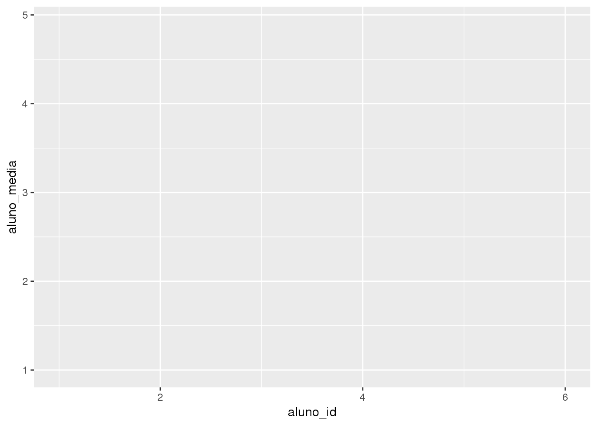
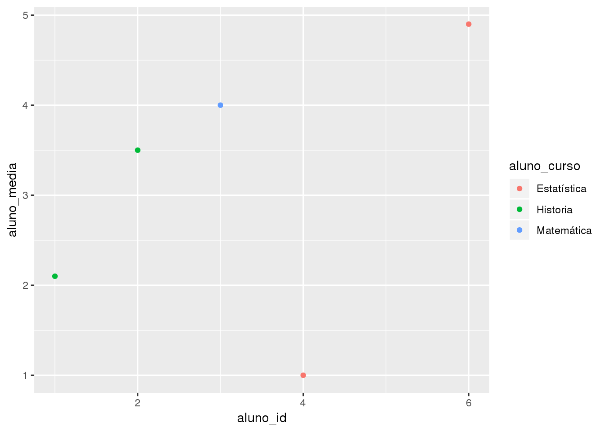

4 Introdução ao ggplot 📊
Escolhemos a biblioteca de visualização ggplot para R e Python, pois sua sintaxe é bem amigável e é o pacote mais famoso de visualização de dados em R, levando isso em conta, a comunidade de Python resolveu criar um biblioteca beseada no ggplot chamada plotnine.
4.1 O que é o ggplot?
Bom, ggploté um pacote em R criado por Hadley Wickham, a sintaxe se baseia na obra The Grammar of Graphics. Sua sintaxe é baseada é um conjunto de camadas, cujo o mapeamento dos atributos é chamado de aesthetics. O esqueleto pode ser escrito assim:
ggplot(data = <DATA>, aes(<MAPPINGS>)) +
<GEOM_FUNCTION>(
mapping = aes(<MAPPINGS>),
stat = <STAT>,
position = <POSITION>
) +
<COORDINATE_FUNCTION> +
<FACET_FUNCTION> Vamos explicar linha por linha do código acima. Vamos lá 🧮.
4.2 Mapeamente Estético
Podemos mapear dentro da função ggplot() ou dentro de alguma geométria. A imagem abaixo, foi retirada do livro visualização de dados, mostra os métodos geométricos do mapeamento estético.

Vamos começar criando um dataframe, desse modo:
escola <- data.frame(
aluno_id = c(1, 2, 3, 4, 5, 6),
aluno_sexo = c("Masculino", "Feminino","Masculino", "Feminino", "Masculino", "Feminino"),
aluno_curso = c("Historia", "Historia", "Matemática",
"Estatística", "Matemática", "Estatística"),
aluno_media = c(2.1, 3.5, 4.0, 1.0, NA, 4.9),
aluno_avaliacao = c("Ruim", "Ruim", "Excelente",
"Ruim", "Nenhum", "Excelente"))
knitr::kable(escola)| aluno_id | aluno_sexo | aluno_curso | aluno_media | aluno_avaliacao |
|---|---|---|---|---|
| 1 | Masculino | Historia | 2.1 | Ruim |
| 2 | Feminino | Historia | 3.5 | Ruim |
| 3 | Masculino | Matemática | 4.0 | Excelente |
| 4 | Feminino | Estatística | 1.0 | Ruim |
| 5 | Masculino | Matemática | NA | Nenhum |
| 6 | Feminino | Estatística | 4.9 | Excelente |
Agora, vamos mapear os atributos do nosso dataframe escola, dessa forma:

Bom, agora que mapeamos nossos atributos é possível ver que no eixo x está escrito aluno_id e no eixo y está escrito aluno_media.
4.3 Objetos geométricos
Aprendemos o mapeamento estético, agora vamos colocar alguns objetos geométricos no nosso gráfico, com base nessa tabela, retirado da livro Ciência de dados em R:
| Tipo | Objeto Geométrico |
|---|---|
| Dispersão (scatterplot) | geom_point() |
| Gráfico de bolhas | geom_point() |
| Gráfico de barras Histograma | geom_bar() e geom_col()
geom_histogram() |
| Boxplot | geom_boxplot() |
| Densidade | geom_density() |
| Gráfico de linhas | geom_line() |
Vamos utilizar geom_point para fazer um gráfico bolhas no conjunto de dados, desse modo:

Olha que legal, ainda assim, noss gráfico parece estar errado, por exemplo, no eixo x, não sabemos se começa com 0 ou 1, o nome dos nossos atributos no nosso gráfico também não está legal, vamos melhorará-lo 🎗.
4.4 Escalas
Bom, agora é a hora de melhorar nosso gráfico, que por sinal está bem estranho, vamos lá!
Primeiro, vamos mudar o nome dos nossos atributos em cada eixo e também mudar as escalas:
ggplot(escola, aes(x=aluno_id, y=aluno_media, color=aluno_curso)) +
geom_point(na.rm = TRUE) +
scale_x_continuous(name = "Identificação dos alunos", breaks = 1:6)
Opa, assim ficou muito mais claro, mas, mudar o nome de apenas um eixo não move moinhos, não, pera? 👏.
ggplot(escola, aes(x=aluno_id, y=aluno_media, color=aluno_curso)) +
geom_point(na.rm = TRUE) +
scale_x_continuous(name = "Identificação dos alunos", breaks = 1:6) +
scale_y_continuous(name="Média dos alunos",
breaks = seq(1, 6, 0.5))
Ainda está faltando mais algumas coisas, por exemplo, colocar e adicionar um título no nosso gráfico.
cores <- c("Estatística" = "green",
"Historia" = "red",
"Matemática" = "blue")
ggplot(escola, aes(x=aluno_id, y=aluno_media, color=aluno_curso)) +
geom_point(na.rm = TRUE) +
scale_x_continuous(name = "Identificação dos alunos", breaks = 1:6) +
scale_y_continuous(name="Média dos alunos",
breaks = seq(1, 6, 0.5)) +
scale_color_manual("Matérias", values = cores) +
ggtitle("Média dos alunos da faculdade y")
Só consegui observar agora que o aluno com id 5 não possui média em nenhuma matéria. Agora, que tal dividirmos nosso gráfico em subgráficos? 🆒.
4.5 Subplots
Bom, quero visualizar de forma que divida nosso gráfico em subgráficos, usando facet_wrap, dessa forma:
cores <- c("Estatística" = "green",
"Historia" = "red",
"Matemática" = "blue")
ggplot(escola, aes(x=aluno_sexo, y=aluno_media, color=aluno_curso)) +
geom_point(na.rm = TRUE) +
facet_grid(~ aluno_avaliacao) +
labs(title="Notas dos alunos por grid",
x = "Sexo dos alunos",
y = "Média dos alunos") +
scale_color_manual("Matérias", values = cores) +
ggtitle("Média dos alunos da faculdade y")
Dessa vez, usei labs para demonstrar que essa função também altera o nome dos eixos.
4.6 Temas
Por último, vamos deixar nosso gráfico mais bonito, usando os temas do próprio pacote:
cores <- c("Estatística" = "green",
"Historia" = "red",
"Matemática" = "blue")
ggplot(escola, aes(x=aluno_id, y=aluno_media, color=aluno_curso)) +
geom_point(na.rm = TRUE) +
scale_x_continuous(name = "Identificação dos alunos", breaks = 1:6) +
scale_y_continuous(name="Média dos alunos",
breaks = seq(1, 6, 0.5)) +
scale_color_manual("Matérias", values = cores) +
ggtitle("Média dos alunos da faculdade y") +
theme_bw()
Bom, sabemos que o ggplot é bem completo, mas, só abordados isso, com o tempo vamos adicionando mais materiais. Para se aprofundar no pacote, veja nossas análises no dataAt 💃 .